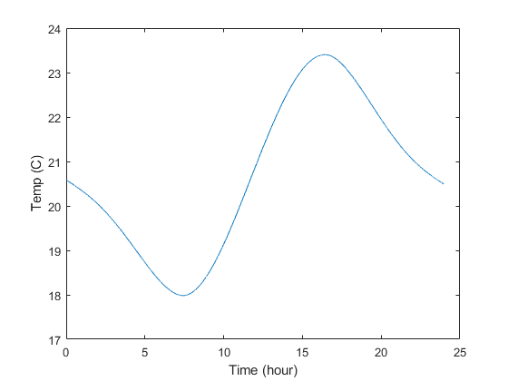
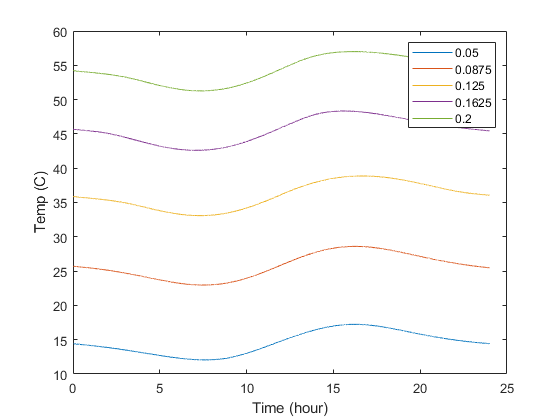
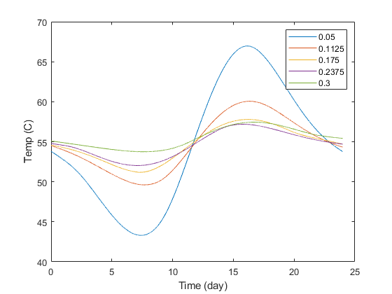

tspan = linspace(0,60*60*60*24, 10*60*60*24);
day_start = 45*60*60*24/6;
day_end = 46*60*60*24/6;
y_0= 17;
T_a = -3;
m = 3000 * 5 * 5 * .2;
c = 800;
h_inside = 15;
h_outside = 30;
A_win = 2.6*2.6;
A_wall = 25*2 + 15*4 - A_win;
A_f = 25;
L_wall = .07;
K_wall = .04;
h_eq_win = .7;
R_FtoA = 1/(h_inside * A_f);
R_AirtoWall_in = 1/(h_inside * A_wall);
R_W = L_wall/(K_wall * A_wall);
R_AtoWin_in = 1/(h_inside*A_win);
R_win = 1/(h_eq_win*A_win);
R_AtoWin_out = 1/(h_outside*A_win);
R_AirtoWall_out = 1/(h_outside * A_wall);
R_tot = R_FtoA + 1/((1/(R_AirtoWall_in + R_W + R_AirtoWall_out)) + (1/(R_AtoWin_in + R_win + R_AtoWin_out)));
[t, y] = ode45(@(t,y) A_win*(-361*cos((pi*t)/(12 * 3600)) + 224*cos((pi*t)/(6 * 3600)) + 210)/(m*c) - (y - T_a)/(R_tot*m*c), tspan, y_0);
temp_inside_air = ((-R_FtoA.*(y - T_a))./R_tot) + y;
sec_2_day = 60*60*24;
sec_2_hour = 60*60;
plot(t/sec_2_day,y)
hold on
plot(t/sec_2_day,temp_inside_air, 'red')
xlabel("Time (days)")
ylabel("Temp (C)")
legend('Thermal Mass Temp', 'Indoor Air Temp')
hold off
figure
plot((t(day_start:day_end)-t(day_start))/sec_2_hour, temp_inside_air(day_start:day_end))
xlabel("Time (hour)")
ylabel("Temp (C)")
figure
lst = .05:((.2-.05)/4):.2;
for L_wall = .05:((.2-.05)/4):.2
R_W = L_wall/(K_wall * A_wall);
R_tot = R_FtoA + 1/((1/(R_AirtoWall_in + R_W + R_AirtoWall_out)) + (1/(R_AtoWin_in + R_win + R_AtoWin_out)));
[t, y] = ode45(@(t,y) A_win*(-361*cos((pi*t)/(12 * 3600)) + 224*cos((pi*t)/(6 * 3600)) + 210)/(m*c) - (y - T_a)/(R_tot*m*c), tspan, y_0);
temp_inside_air = ((-R_FtoA.*(y - T_a))./R_tot) + y;
plot((t(day_start:day_end)-t(day_start))/sec_2_hour, temp_inside_air(day_start:day_end))
hold on
xlabel("Time (hour)")
ylabel("Temp (C)")
legend(num2str(lst(1)),num2str(lst(2)),num2str(lst(3)),num2str(lst(4)),num2str(lst(5)))
end
figure
lst = .05:((.3-.05)/4):.3;
for m = ((3000 * 5 * 5 * .05):(((3000 * 5 * 5 * .3)-(3000 * 5 * 5 * .05))/4):(3000 * 5 * 5 * .3))
[t, y] = ode45(@(t,y) A_win*(-361*cos((pi*t)/(12 * 3600)) + 224*cos((pi*t)/(6 * 3600)) + 210)/(m*c) - (y - T_a)/(R_tot*m*c), tspan, y_0);
temp_inside_air = ((-R_FtoA.*(y - T_a))./R_tot) + y;
plot((t(day_start:day_end)-t(day_start))/sec_2_hour, temp_inside_air(day_start:day_end))
hold on
xlabel("Time (day)")
ylabel("Temp (C)")
legend(num2str(lst(1)),num2str(lst(2)),num2str(lst(3)),num2str(lst(4)),num2str(lst(5)))
end
Warning: Ignoring extra legend entries.
Warning: Ignoring extra legend entries.
Warning: Ignoring extra legend entries.
Warning: Ignoring extra legend entries.
Warning: Ignoring extra legend entries.
Warning: Ignoring extra legend entries.
Warning: Ignoring extra legend entries.
Warning: Ignoring extra legend entries.
  